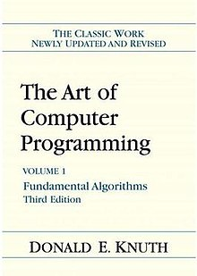

Donald E. Knuth was an early pioneer of the field of computer science and has left a lasting legacy that continues to be felt to this day. His most famous contribution and what he considers his most important work is the multi-volume Art of Computer Programming series. It was initially written as an attempt to standardize the computer programming practices of the day and was intended to only take up a single book, but as he wrote it the scope of the work widened and grew into the prolific work that it is today. In addition to its original intended purpose, the books are often credited with formalizing the analyses of algorithms and includes the origins of the notation still used to for analyzing algorithms. At one point Knuth even proposed to his publishers changing the name of the book to The Analyses of Algorithms, which the publishers shot down under the grounds that nobody would ever buy a book with that name.
Partially motivated by his dislike for the quality of his computer printed books, Knuth also made contributions to the field of digital typesetting. The result of this was TeX, a typesetting engine, and METAFONT, a font design system. This was an ongoing project and Knuth would spend a little over a decade making changes and improving upon his typesetting engine before giving it up in 1990. Knuth made his typesetting engine easy to make additions to, and many offshoots have come from the TeX printing system, with names like LaTeX and ConTeXt. This would foreshadow the open-source software movement that would make itself felt in the decades to come.
Knuth once said that Computer programming is an art, because it applies
accumulated knowledge to the world, because it requires skill and ingenuity, and
especially because it produces objects of beauty. A programmer who subconsciously
views himself as an artist will enjoy what he does and will do it better.
I thought
this quote was interesting coming from a man who had enjoyed tremendous influence
over the field of computers and computer programming. This quote shows Donald Knuth
not as a scientist or theorist, but as an actual practitioner and reveals a little
about Knuth's personal relationship with computer programming.
Perhaps more famous than any quote from Knuth himself is a series of quotes from
Bill Gates concerning The Art of Computer Programming. In a newspaper column that Gates
used to write while still at MIT he quipped If you think you're a really good
programmer... read (Knuth's) Art of Computer Programming... You should definitely send
me a resume if you can read the whole thing.
This quote was featured on the cover of the
third edition of the first volume of Art of Computer Programming, which further solidified
the book as an industry standard. In the same article Gates goes on to emphasize the
difficulty and dense content of the book, saying It took incredible discipline, and
several months, for me to read it. I studied 20 pages, put it away for a week, and came
back for another 20 pages. If somebody is so brash that they think they know everything,
Knuth will help them understand that the world is deep and complicated.